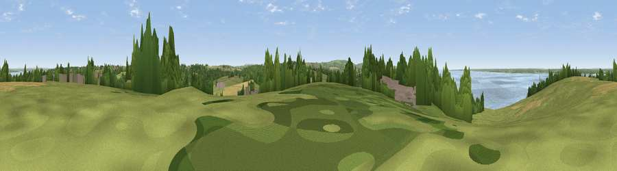

Sticelett Hill
#24611 in England · top 48% of its area beats it · near NorthwoodThe view, rendered

A 360° render of this exact spot computed from the terrain model, tree cover and land cover — summer colours, afternoon light, calibrated against photographs of famous viewpoints. Real trees, hedges and buildings will differ in detail.
The panorama
Grey silhouette: terrain skyline in each direction (720 bearings, Earth curvature and refraction included). Dashed green: skyline with trees (+15 m) and buildings (+8 m) as obstacles. Blue strip: how far the ground is visible on each bearing.
Where the view opens
Wedge length = distance to the farthest visible ground on that bearing (vegetation-aware). Rings at 10, 25 and 50 km.
What fills the view
43% grassland · 24% water · 20% woodland · 7% cropland · 5% built-up · 1% wetland
Angular shares of the visible panorama (visual magnitude), not map area. Landscape diversity 0.62 (0–1 Shannon).
Key numbers
More beautiful places nearby
The staircase of upgrades: each row has a higher view potential than everything closer. Driving times are estimates from straight-line distance, calibrated against real road routing — check an actual route before setting out.
| Place | Direction | Drive | Score |
|---|---|---|---|
| Viewpoint near Porchfield | WSW · 2 km | ~6 min | 51.6 |
| Viewpoint near Porchfield | WSW · 3 km | ~8 min | 54.2 |
| Viewpoint near Carisbrooke | S · 6 km | ~12 min | 72.1 |
| Viewpoint near Gatcombe | S · 9 km | ~17 min | 72.3 |
| Viewpoint near Arreton | SE · 10 km | ~19 min | 74.1 |
| Arreton Down | SE · 10 km | ~20 min | 77.7 |
| Viewpoint near Chillerton | S · 10 km | ~20 min | 78.3 |
| Limerstone Down | SSW · 10 km | ~20 min | 84.5 |
50.74171, -1.33902 · source: dobih hill · position refined by local search. Computed location — check access rights before visiting.